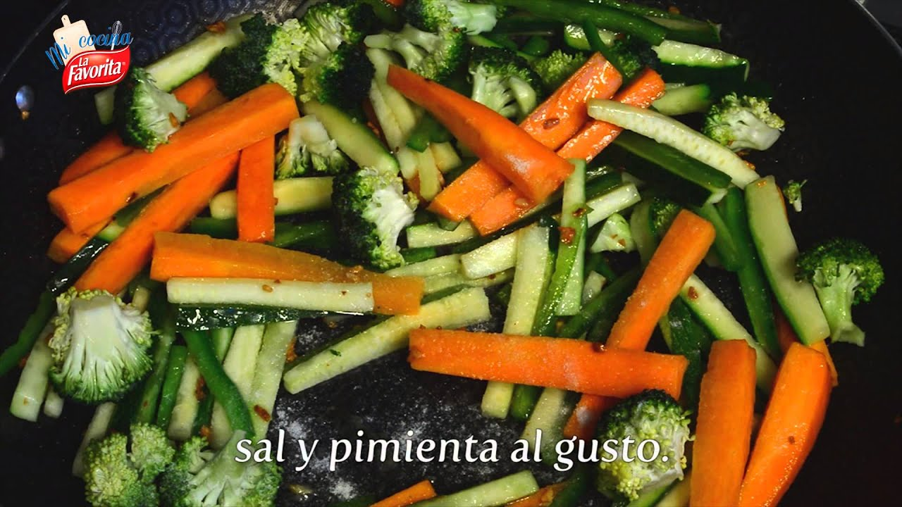

Vegetales – Incalfer
2020.09.14 13:19
Qué producto desea procesar... Quienes Somos Líneas de proceso Papas Bastón Vegetales Snacks Fritos Papas Chips Freidores para papas kettle Maníes y frutos secos Plátanos chips Plátanos maduros Pellets de harina y chicharrón de cerdo Palitos salados / Frituras de trigo Pochoclos / Pop corn Churrito Extruidos Monotornillo Doble tornillo Envasadoras Empanizados Equipos Cortadoras Peladoras Cargadoras, zarandas y cintas de selección Lavadoras Blanchers Freidores Enfriadores Centrifugadoras y escurridoras de agua Saladores y saborizadores Bañadoras y empanadoras Extrusoras Envasadoras Feteadoras Exposiciones Contacto
Vegetales
Líneas de verduras de hojas.
Las líneas para procesado de vegetales ofrecen la más moderna tecnología para procesos contínuos, adaptados a las necesidades de producción y posibilidades económicas de los procesadores de vegetales. El diseño modular y la gran variedad de equipos disponibles permiten configurar la línea ideal para cada aplicación. Normalmente una línea de vegetales de hoja esta compuesta por cintas o mesas de selección, lavadoras, cortadoras y centrifugadoras. Cuando incluyen hortalizas de bulbo o frutas integran alguno o varios modelos de cubeteadoras. En todos ls casos los equipos están construídos en acero inoxidable y tienen un diseño robusto con un muy simple y escaso mantenimiento.
Ver información
Máquinas de líneas de vegetales
Peladoras Mesas y cintas Centrifugadoras LavadorasLas peladoras abrasivas INCALFER , son utilizadas para papa, zanahoria, cebolla, remolacha y otras hortalizas. La homogeneidad en el pelado, el trato delicado del producto y mínimo desperdicio han sido prioridades en su diseño. Según el productos a procesar y las necesidades especificas de cada cliente, se define el grano fino, mediano o grueso del abrasivo con que se entrega el equipo. Las superficies abrasivas poseen larga vida útil y son recambiares. Han sido totalmente construidas en acero inoxidable con ejes templados y bujes de polímeros autolubricados inmunes el agua y a la tierra. Se fabrican varios modelos en función a la capacidad de producción que se desee alcanzar. Opcionalmente, puede automatizarse la carga y descarga del producto.
Líneas de Papa Bastón Prefritas. Papa Fritas (Continua) Papa fritas (semi continúa) Papas fritas por batch PeladorasPeladora P30
El disco y una porción de la pared interior del cilindro, están recubiertos con material… admin 11 diciembre, 2018 Líneas de papas bastón natural Papas Kettle PeladorasPeladora P40 Manual
El disco y una porción de la pared interior del cilindro, están recubiertos con material… admin 5 mayo, 2019 Cortadoras VegetalesCubeteadora MST90/MST125
Dispone de tres cortes en planos perpendiculares entre sí. El producto ingresa y gira dentro… admin 14 noviembre, 2019Mesa de inspección, selección y repasado dispuesta con orificios frente a cada operador, debajo de los cuales se cuelgan bolsas colectoras de los desperdicios generados. El producto avanza por ambos costados de una cinta plástica transportadora, de donde es tomado, repasado y depositado en el canal central por cada operador para proceder a la siguiente operación, permitiendo el desecho de partes malas. Construcción total en acero inoxidable y materiales sanitarios.
Cargadoras zarandas y cintas de seleccionCinta de Salida
Construida en acero inoxidable y con la banda de plástico sanitario. Es utilizada para transportar… admin 11 diciembre, 2018 Cargadoras zarandas y cintas de seleccionElevador Z
Construcción total en acero inoxidable con cangilones colgantes en material plástico. Diseño de fácil limpieza… admin 11 diciembre, 2018 Cargadoras zarandas y cintas de seleccionAlimentador Vibratorio
Vibración regulable para una alimentación uniforme. Tolva fija y bandeja vibratoria. Construcción robusta para un… admin 11 diciembre, 2018 Cargadoras zarandas y cintas de seleccion MonotornilloCargadora/ Homogeneizador de harinas
El proceso se inicia en un humidificador a tornillo vertical que mezcla y homogeniza la… admin 11 diciembre, 2018 Cargadoras zarandas y cintas de seleccion Líneas de Papa Bastón Prefritas. Líneas de papas bastón naturalCintas de inspección
Tareas manuales en líneas continuas sobre los productos. Sobre una estructura en forma de mesa… admin 11 diciembre, 2018 Cargadoras zarandas y cintas de seleccion Líneas de Papa Bastón Prefritas.Separadora de astillas
En la elaboración de productos vegetales cortados como el caso de los bastones o cubos… admin 11 diciembre, 2018 Cargadoras zarandas y cintas de seleccionSeparadora de astillas (helicoidal)
En la elaboración de productos vegetales cortados como el caso de los bastones de papa,… admin 11 diciembre, 2018 Cargadoras zarandas y cintas de seleccion Churritos churritos zaranda Palitos salados - Frituras de trigo Papas Kettle Pellets Plátanos ChipsZaranda vibratoria
Destinada a la separación de productos diversos triturados o molidos, en diferentes medidas haciéndolos pasar… admin 11 diciembre, 2018 Cargadoras zarandas y cintas de seleccionTolva cargadora a cinta
Este equipo resulta indicado para alimentar dosificadamente líneas contínuas para el procesado de algunos productos… admin 11 diciembre, 2018 Cargadoras zarandas y cintas de seleccion Líneas de Papa Bastón Prefritas. Papa Fritas (Continua) Papa fritas (semi continúa) Papas fritas por batchTolva Cargadora a tornillo
Este equipo resulta indicado para alimentar dosificadamente líneas contínuas para el procesado de algunos productos… admin 11 diciembre, 2018 Centrifugadoras Centrifugadoras y escurridoras de aguaCentrifugadoras CE 400
Se utilizan para escurrir el agua adherida a los vegetales después del lavado. También en… admin 12 diciembre, 2018 Centrifugadoras Centrifugadoras y escurridoras de aguaCentrifugadora CE450 con timer y variador
Se utilizan para escurrir el agua adherida a los vegetales después del lavado. También en… admin 18 diciembre, 2018 Cortadoras VegetalesCubeteadora MST90/MST125
Dispone de tres cortes en planos perpendiculares entre sí. El producto ingresa y gira dentro… admin 14 noviembre, 2019 Centrifugadoras Centrifugadoras y escurridoras de aguaEscurridora de agua
Este equipo ha sido desarrollado para reducir la entrada de agua al proceso de fritura… Santiago Sanchez Acosta 29 enero, 2020Las centrifugadoras INCALFER , son muy prácticas y simples para escurrir todo tipo de alimentos. Posee un canasto extrapole, que da una gran flexibilidad al trabajo. La velocidad de rotación puede ser fija o variable y opcionalmente pueden incorporar un timer y variador. Posee freno electromagnético, y su construcción es en acero inoxidable.
Centrifugadoras Centrifugadoras y escurridoras de aguaEscurridora de agua
Este equipo ha sido desarrollado para reducir la entrada de agua al proceso de fritura… Santiago Sanchez Acosta 29 enero, 2020 Centrifugadoras Centrifugadoras y escurridoras de aguaCentrifugadora CE450 con timer y variador
Se utilizan para escurrir el agua adherida a los vegetales después del lavado. También en… admin 18 diciembre, 2018 Centrifugadoras Centrifugadoras y escurridoras de aguaCentrifugadoras CE 400
Se utilizan para escurrir el agua adherida a los vegetales después del lavado. También en… admin 12 diciembre, 2018Aseguran lavado profundo y confiable para cumplir con las más exigentes normas sanitarias en todo tipo de vegetales y demás alimentos. Se proveen lavadoras de batch fijas o con descarga, por vuelco manual o neumático y también continuas para líneas de producción.
Constan de una batea dentro de la cual una tina de lavado contiene el producto. Un torrente de agua lo sumerge mientras varios inyectores proyectan agua recirculada a presión. La intensidad con qué el agua impacta sobre el producto, es regulable, para preservar su integridad, como así también el tiempo de lavado.
Pueden incorporar dosificados de bactericida o blanqueadores y trabajar con agua entre 2 y 95 grados centígrados con calentador de gas opcional incorporado o enfriador externo.
Construcción robusta en acero inoxidable y materiales sanitarios. Repuestos estándar y servicio técnico disponible.
Lavadoras Papa fritas (semi continúa) Papas fritas por batchLAVADORA TRV (BATCH)
Estas lavadoras solucionan el delicado y difícil problema del lavado de vegetales de hoja, hortalizas… admin 12 diciembre, 2018 LavadorasLavadora de vegetales HN
Lavadora hidrodinámica continua para vegetales. Ideal para el lavado continuo en cantidades importantes necesario en… admin 12 diciembre, 2018 Lavadoras Líneas de papas bastón natural Papa Fritas (Continua) Papa fritas (semi continúa)Lavadoras Modelo AL
AL-800, AL-1.500, AL-2.000 y AL-3.000 automatica Las lavadoras INCALFER solucionan el delicado y difícil problema… admin 12 diciembre, 2018Dirección: Andrés Baranda 2359 • Quilmes (1878) • Buenos Aires • Argentina
(+54 11) 4253-3848
(+54 11) 4254-3692
(+54 11) 4224-8515
(+54 11) 4224-3265
Email: info@incalfer.com
Exposiciones Incalfood Quienes somos Contacto© 2020 Incalfer.
Quienes Somos Líneas de proceso Papas Bastón Vegetales Snacks Fritos Papas Chips Freidores para papas kettle Maníes y frutos secos Plátanos chips Plátanos maduros Pellets de harina y chicharrón de cerdo Palitos salados / Frituras de trigo Pochoclos / Pop corn Churrito Extruidos Monotornillo Doble tornillo Envasadoras Empanizados Equipos Cortadoras Peladoras Cargadoras, zarandas y cintas de selección Lavadoras Blanchers Freidores Enfriadores Centrifugadoras y escurridoras de agua Saladores y saborizadores Bañadoras y empanadoras Extrusoras Envasadoras Feteadoras Exposiciones Contacto Español English- Importancia de los Vegetales
- 253 mejores imágenes de Laminas de Vegetales y Legumbres ...
- Vegetales | Vegetales24
- 'Chips' vegetales: ¿son más sanas que las patatas fritas ...
- Albóndigas vegetales -Mejor Con Salud-
- Vegetales – Incalfer
- Vallejo Frutas y Vegetales
- Frutas y Vegetales en Inglés - Abingles.com
- VEGGIE PACK Panamá – Delivery de Vegetales y Frutas Frescas
- Nombres de Vegetales en Español [Verduras y Vegetales Verdes]
- Importancia de los Vegetales
Vegetables | Vegetales . Spain's finest vegetables can now grace your dinner table. Choose from such popular brands as Viter, Mamia, and more. These vegetables are especially delicious when accompanying your favorite fish, meat or poultry dish. Hida Roasted Piquillo Peppers With Fried Tomato Net.Wt 340 Gr.
- 253 mejores imágenes de Laminas de Vegetales y Legumbres ...
Los vegetales en ambos casos son remolacha, boniato y chirivía; y —según dicen los paquetes— no tienen ni sabores ni colorantes añadidos. Es cierto, al igual que en la anterior, el gusto de ...
- Vegetales | Vegetales24
Los vegetales que hoy consumimos, tanto frutas como verduras en su enorme diversidad, han sido alguna vez domesticadas por diferentes grupos de seres humanos: mientras en Europa siempre fue central el trigo, en América se había desarrollado profundamente el cultivo del maíz.En la actualidad, cada región del planeta posee un detallado calendario de plantación de vegetales que tiene que ver ...
- 'Chips' vegetales: ¿son más sanas que las patatas fritas ...
Hay algunos vegetales que simplemente crecen mejor, más rápido y más abundante en macetas! Por esto hemos decidido juntar los mejores 20 vegetales para cultivar en macetas. Esto no requiere espacio de jardín, así que incluso si vives en un apartamento, un balcón debería ser más que suficiente para cultivar cualquiera de estos! Vegetales Para Cultivar En Macetas #1.
- Albóndigas vegetales -Mejor Con Salud-
B Vegetales. Perejil Por 200gr $ 1.25. Frutas. Quick View. Frutas, Otros Productos. Jugo de Naranja Por 1/2 Galon $ 5.25. Añadir a la lista de deseos. Añadir al carrito. Quick View. Frutas. Papaya Por Unidad $ 1.75. Añadir a la lista de deseos. Añadir al carrito. Quick View. Frutas. Kiwi Por Unidad $ 0.50. Añadir a la lista de deseos ...
- Vegetales – Incalfer
Aunque el pescado es una buena fuente de ácidos grasos omega-3, también se pueden encontrar en muchos vegetales como las coles de Bruselas, col rizada, espinacas y ensalada de verduras de hojas. Alimentos ricos en vitamina E.
- Vallejo Frutas y Vegetales
Frutas y vegetales en el idioma inglés. Como se escriben y como se dicen en ingles
- Frutas y Vegetales en Inglés - Abingles.com
Frutas y verduras que son contables Todo lo que sea contable podemos expresarlo como una determinada cantidad: - O nion (cebolla) - Grape (uva) - Pear (pera) - P each (durazno) - R adish (rábano) - E ggplant (berenjena) - P epper (pimentón) - P ineapple (Piña) - B anana (cambur) - Orange (naranja)
- VEGGIE PACK Panamá – Delivery de Vegetales y Frutas Frescas
Pronunciación en inglés de vegetables. Aprende a pronunciar vegetables en inglés con videos, audio y desgloses silábicos de los Estados Unidos y el Reino Unido.
- Nombres de Vegetales en Español [Verduras y Vegetales Verdes]
Las líneas para procesado de vegetales ofrecen la más moderna tecnología para procesos contínuos, adaptados a las necesidades de producción y posibilidades económicas de los procesadores de vegetales. El diseño modular y la gran variedad de equipos disponibles permiten configurar la línea ideal para cada aplicación.
Vegetables | Vegetales . Spain's finest vegetables can now grace your dinner table. Choose from such popular brands as Viter, Mamia, and more. These vegetables are especially delicious when accompanying your favorite fish, meat or poultry dish. Hida Roasted Piquillo Peppers With Fried Tomato Net.Wt 340 Gr.
Los vegetales en ambos casos son remolacha, boniato y chirivía; y —según dicen los paquetes— no tienen ni sabores ni colorantes añadidos. Es cierto, al igual que en la anterior, el gusto de ...
Los vegetales que hoy consumimos, tanto frutas como verduras en su enorme diversidad, han sido alguna vez domesticadas por diferentes grupos de seres humanos: mientras en Europa siempre fue central el trigo, en América se había desarrollado profundamente el cultivo del maíz.En la actualidad, cada región del planeta posee un detallado calendario de plantación de vegetales que tiene que ver ...
Hay algunos vegetales que simplemente crecen mejor, más rápido y más abundante en macetas! Por esto hemos decidido juntar los mejores 20 vegetales para cultivar en macetas. Esto no requiere espacio de jardín, así que incluso si vives en un apartamento, un balcón debería ser más que suficiente para cultivar cualquiera de estos! Vegetales Para Cultivar En Macetas #1.
B Vegetales. Perejil Por 200gr $ 1.25. Frutas. Quick View. Frutas, Otros Productos. Jugo de Naranja Por 1/2 Galon $ 5.25. Añadir a la lista de deseos. Añadir al carrito. Quick View. Frutas. Papaya Por Unidad $ 1.75. Añadir a la lista de deseos. Añadir al carrito. Quick View. Frutas. Kiwi Por Unidad $ 0.50. Añadir a la lista de deseos ...
Aunque el pescado es una buena fuente de ácidos grasos omega-3, también se pueden encontrar en muchos vegetales como las coles de Bruselas, col rizada, espinacas y ensalada de verduras de hojas. Alimentos ricos en vitamina E.
Frutas y vegetales en el idioma inglés. Como se escriben y como se dicen en ingles
Frutas y verduras que son contables Todo lo que sea contable podemos expresarlo como una determinada cantidad: - O nion (cebolla) - Grape (uva) - Pear (pera) - P each (durazno) - R adish (rábano) - E ggplant (berenjena) - P epper (pimentón) - P ineapple (Piña) - B anana (cambur) - Orange (naranja)
Pronunciación en inglés de vegetables. Aprende a pronunciar vegetables en inglés con videos, audio y desgloses silábicos de los Estados Unidos y el Reino Unido.
Las líneas para procesado de vegetales ofrecen la más moderna tecnología para procesos contínuos, adaptados a las necesidades de producción y posibilidades económicas de los procesadores de vegetales. El diseño modular y la gran variedad de equipos disponibles permiten configurar la línea ideal para cada aplicación.
